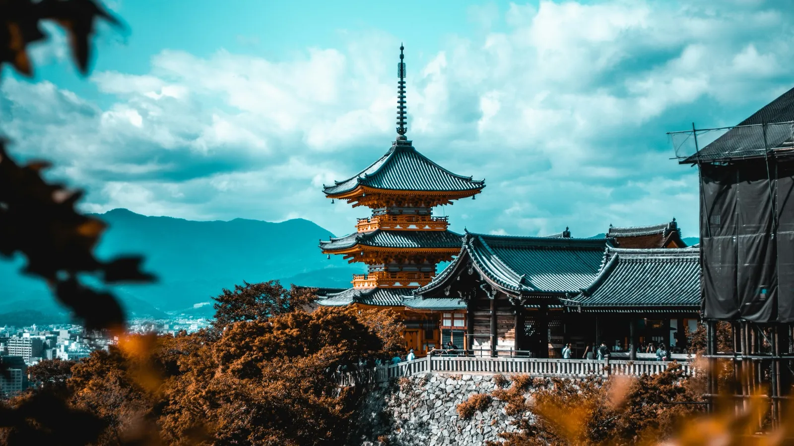

The short answer
Split Kyoto in two: Day 1 in the east (Fushimi Inari, Kiyomizu-dera, Higashiyama, Gion) and Day 2 in the west and north (Arashiyama, Kinkaku-ji, Nishiki Market, Pontocho). Start early both days — before 8:00 the famous spots are calm — and move by train and subway, not by city bus.
Day 1 — Fushimi Inari, Kiyomizu-dera and Gion
- 7:00 Fushimi Inari Taisha — the red torii gates. Free, open 24 hours. JR Nara line to Inari station (5 minutes from Kyoto Station). Walk up to the Yotsutsuji viewpoint (~45 min) and back.
- 10:00 Kiyomizu-dera — wooden stage over the city (~¥500). Train to Kiyomizu-Gojo, then walk uphill.
- 11:30 Sannenzaka and Ninenzaka — old stone lanes, tea houses and souvenir shops. Lunch here.
- 14:00 Kodai-ji or Yasaka Pagoda, then Yasaka Shrine and Maruyama Park.
- 17:00 Gion — Hanamikoji and Shirakawa at dusk. Dinner in Gion or along the Kamo river.
Day 2 — Arashiyama, Kinkaku-ji and Nishiki
- 7:30 Arashiyama Bamboo Grove — JR Sagano line to Saga-Arashiyama (~15 min). By 9:30 it is packed.
- 8:30 Tenryu-ji garden (opens 8:30), then the Togetsukyo bridge and the river.
- 11:30 Kinkaku-ji (Golden Pavilion, ~¥500) — taxi from Arashiyama (~20 min, shared it's worth it) or bus.
- 13:00 Ryoan-ji rock garden (10 minutes' walk), or lunch nearby.
- 16:00 Nishiki Market for street food, then Pontocho alley for dinner.
Getting around Kyoto
- City buses are slow and crowded in peak season: use JR, Keihan, Hankyu and the subway whenever you can.
- Pay everything with Suica or PASMO — they work on Kyoto trains, subway and buses.
- For 3+ people, a taxi between distant sights (e.g. Arashiyama → Kinkaku-ji) costs about the same as public transport and saves an hour.
Where to stay
Kyoto Station area is the most practical (Shinkansen, JR lines, airport trains). Shijo / Kawaramachi is better for evenings, restaurants and walking to Gion.
Tips
- Coming from Tokyo? Read Tokyo to Kyoto: Shinkansen, bus or flight?
- Got a third day? Nara (deer and Todai-ji) is 45 minutes away, or follow our Tokyo, Kyoto and Osaka in 7 days.
- Cherry blossom (late March–early April) and autumn leaves (mid-to-late November) are the busiest weeks: book hotels early.
Prices and rules are indicative and can change — always check before you travel.
Checked against official sources. Rules and prices change: always confirm on these sites before you travel.
Plan your trip
Some links are affiliate links: booking through them costs you nothing extra and helps keep 687 free.
Two days in Kyoto, already in order.
In 687 Japan your Kyoto days get the sights in the right order, the train lines between them and nearby food when you need it. If rain or crowds change the plan, NOW rebuilds the rest of the day.